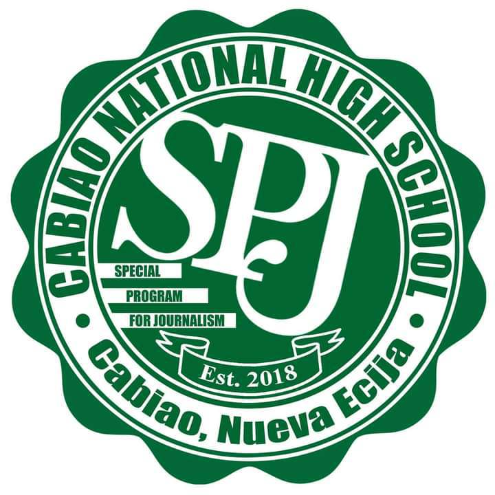
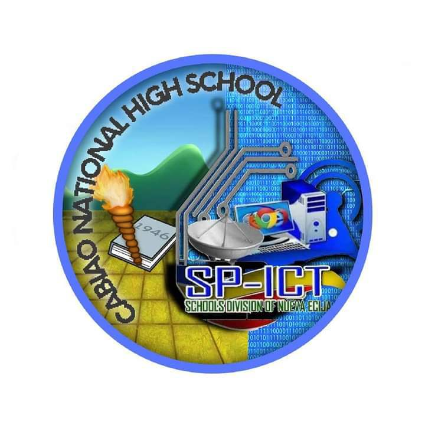
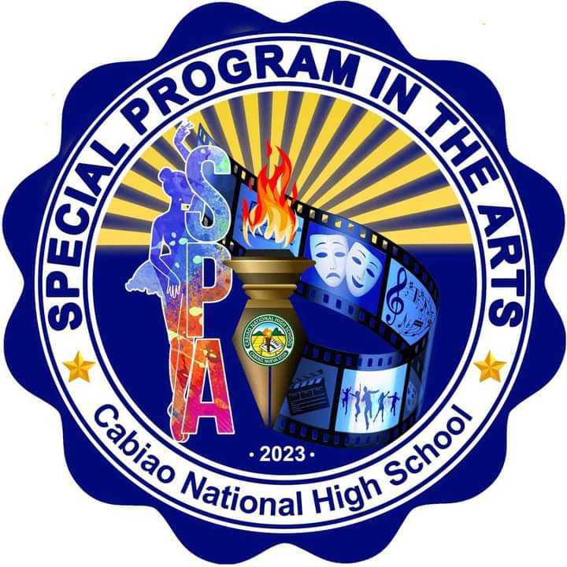

To protect and promote the right of every Filipino to quality, equitable, culture-based, and complete basic education where:
Students learn in a child-friendly, gender-sensitive, safe, and motivating environment. Teachers facilitate learning and constantly nurture every learner. Administrators and staff, as stewards of the institution, ensure an enabling and supportive environment for effective learning to happen. Family, community, and other stakeholders are actively engaged and share responsibility for developing life-long learners".
We dream of Filipinos who passionately love their country and whose values and competencies enable them to realize their full potential and contribute meaningfully to building the nation. As a learner-centered public institution, the Department of Education continuously improves itself to better serve its stakeholders.
Maka-Diyos
Maka-tao
Makakalikasan
Makabansa
Cabiao High School, founded in 1946 with 356 students, has transformed into a leading educational institution with 4,135 students today. Originally utilizing local homes and makeshift facilities, the school’s early infrastructure was built through community efforts spearheaded by Mayor Pablo P. Aligada. Reclassified as a nationalized high school in 1987, Cabiao High School quickly distinguished itself through academic and athletic excellence, receiving accolades for top performances in various competitions. This success continued with significant contributions from its principals: Mr. Mariano R. Guevarra introduced a pioneering graduation program, Dr. Anastacio C. Ramento improved academic standards, and Mr. Juliano Quioit fostered a supportive environment. Mr. Gregorio C. Bugarin’s tenure brought sports achievements and infrastructure projects, while Mrs. Juliana T. Abes and Mrs. Antonia T. Galang focused on expanding facilities and teacher development. Addressing challenges from the Free Secondary Education Act, Mr. Honorio M. Franco sought community and government support, and Mrs. Natalia G. Galang secured additional resources through collaborations. Miss Juanita T. Tomas achieved fiscal autonomy for the school and further enhanced its facilities. Overall, Cabiao High School’s journey reflects a deep commitment to educational excellence and community service, with each principal contributing significantly to its development and success.
| Logo | Description |
|---|---|
| Name: Special Program in Science Technology Engineering or SP-STE | |
| About:STE lives up to its name.This section specializes in more about Science Technology and or Engineering for students who want to preaper for STEM in their senior year of higschool.SP-STE helps students on being higly responsible, competitive, and work-ready learners from schools offering relevant and innovative about Science, Technology and Engineering education. | |
|  | Name:Special Program in Journalism or SP- J |
| About:SP-J speciallizes on about journalism, it is all about activity of gathering, assessing, creating, and presenting news and information.This section helps students to developed the experiences,hone the journalistic skills and competencies of student-writers and to strengthen free and responsible journalism. | |
|  | Name:Special Program Information Communication Technology or SP-ICT |
| About:SP-ICT speciallizes about computers and technology,Its helps students to get to understand on how to use computers better and more properly. It can also preaper students for their seniorin year of highschool.Beacause in their senior year they should always be having to do researchs,reportings,and maybe even theisis which would need lots of technolgy. | |
| Name:Special Programimg Sports ir SP-S | |
| About:SP-S is all about doing sports and learning about sports.This special programming is for students who love to play sports.This is also for students who want to take a course about anythung including sports. | |
|  | Name:Special Program in Arts or SPA |
| About:SPA is all about learning and enchacing a students knowledge in music, dance, visual arts, media arts, theater arts, adn creative writing. | |